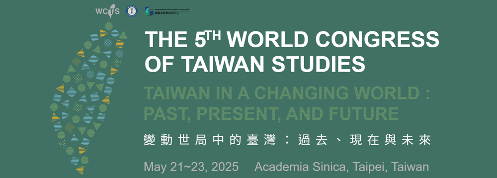

|
|
| The Featured Research Newsletter is a quarterly email that highlights new and ongoing initiatives and events from the four major featured fields at National Taiwan Normal University: the Chinese Language and Technology Center, the Institute for Research Excellence in Learning Sciences, the Social and Emotional Education and Development Center, and the International Taiwan Studies Center. |
Subscribe to future editions of the NTNU Featured Research NewsletterSubscribe |
|
|
| Featured News |
|
SEED Introduction
Social Emotional Education and Development Center:
Advancing Social-Emotional Learning in Taiwan
In 2023, National Taiwan Normal University (NTNU)—a globally recognized leader in education research, consistently ranked among the top universities worldwide for education studies (#7 in U.S. News Best Global Universities, #27 in QS World University Rankings, #38 in THE World University Rankings)—established the Social Emotional Education and Development Center (SEED) with support from the Ministry of Education. As a college-level research hub, SEED aligns with international trends in social-emotional learning (SEL) while addressing the mental and physical well-being of students and educators. The center builds on NTNU’s pioneering work in SEL, integrating expertise across educational psychology, science and engineering, sports and leisure studies, technology, and teacher training to develop evidence-based curricula tailored to Taiwan’s educational landscape.
A Distinctive Approach: Integrating Eastern Wisdom with SEL
What sets SEED apart from other SEL research centers worldwide is its unique fusion of Eastern philosophies—Confucianism, Taoism, and Buddhism—with contemporary SEL frameworks. This integration extends beyond theory to practical applications, incorporating mindfulness, Zen principles, and classical texts into SEL interventions. By drawing from Taiwan’s rich cultural and philosophical heritage, SEED fosters culturally responsive SEL strategies that resonate with the lived experiences of learners in East Asian contexts.
|
|
|
Cover Story
Fostering Social-Emotional Learning Through Humor:
Dr. Hsueh-Chih Chen’s Research Innovations
Dr. Hsueh-Chih Chen, Chief Director of the SEED Center at National Taiwan Normal University, is a leading scholar in educational psychology and a pioneer in social-emotional learning (SEL). Currently a Chair Professor in NTNU’s Department of Educational Psychology and Counseling, Dr. Chen also serves as the Editor-in-Chief of the Journal of Research in Educational Science and Bulletin of Educational Psychology, both SCOPUS-indexed journals. His extensive academic leadership includes serving as Dean of the College of Education, Director of the Center for Teaching and Learning Development, and Chair of multiple professional associations in psychology and education.
With over 220 journal publications, 42 books and monographs, and more than 300 conference papers, Dr. Chen’s contributions to SEL, humor studies, creativity, cognition, and positive psychology have earned him prestigious awards, including the National Science and Technology Council’s Outstanding Research Award (2014, 2023) and the Ministry of Education’s National Excellent Teacher Award (2023).
|
|
|
| Additional News and Highlights |
|
Research News
Can the Body Heal the Mind?
Exploring Wellbeing Through Physical Activity
Dr. Yu-Kai Chang, Distinguished Professor and Chair of the Department of Physical Education and Sport Sciences at NTNU, explores the intersection of physical activity and cognitive neuroscience. His research, using EEG, sMRI, and fMRI, investigates how exercise influences cognitive function in various populations, from athletes to individuals at risk of cognitive decline.
Exercise and Alzheimer’s Risk Reduction
Dr. Chang’s latest study in Journals of Gerontology, Series A reveals that a single session of exercise enhances cognitive performance, regardless of intensity or genetic risk (APOE ε4) for Alzheimer’s disease. These findings support exercise as a universal strategy for cognitive health.
Meta-Analysis on Exercise and Depression
A recent meta-analysis in the International Journal of Clinical and Health Psychology synthesized data from 12 trials with 945 adults with major depressive disorder. The study confirmed that aerobic exercise significantly improves memory and executive function, especially when combined with antidepressants. It also identified optimal exercise parameters—moderate-to-vigorous intensity, three times weekly, for up to 12 weeks- offering evidence-based guidelines for mental health interventions.
|
|
|
Research News
Navigating Conflict in Groups:
Insights for Social-Emotional Learning
Dr. Li-Fei Wang, Distinguished Professor at NTNU’s Department of Educational Psychology and Counseling, explores emotional regulation and group counseling through a culturally relevant "Emotional Cultivation Model" (DER). Her research demonstrates that this model enhances emotional stability, social adaptability, and well-being in children and adolescents.
Optimizing Group Dynamics for Emotional Growth
In a recent study published in Group Dynamics: Theory, Research, and Practice, Dr. Wang and collaborators analyzed 37 Taiwanese adolescent counseling groups using the BEAR intervention. They identified three group development patterns, with the “ideal” pattern—marked by increasing engagement and a low-high-low conflict trajectory—leading to the most positive emotional outcomes.
This research highlights the importance of adaptive leadership in SEL and group counseling, emphasizing how managing engagement and conflict can optimize group dynamics. The findings also underscore the value of culturally informed SEL approaches, reinforcing the SEED Center’s commitment to integrating multicultural perspectives into emotional development strategies.
|
|
|
Research News
Enhancing Social-Emotional Learning
for Students with Special Needs
Dr. Huei-Mei Liu, Chair of NTNU’s Department of Special Education, is advancing research on language development and executive functions (EFs) in children with disabilities. Her recent study in Reading and Writing explores how EFs—particularly inhibition and verbal working memory—affect reading comprehension in Chinese-speaking children with ADHD.
Findings reveal that while language skills are critical for all learners, children with ADHD rely more on inhibition and working memory for reading success. This research underscores the need for targeted interventions that strengthen these cognitive functions, with potential benefits extending to social-emotional learning (SEL). By integrating EF-focused strategies, SEL programs can better support self-regulation and adaptive learning for students with diverse needs.
|
|
|
Engagement News
Eastern Wisdom and Emotional Education:
A Global Dialogue
On November 29, 2024, the SEED Center hosted the International Conference on Traditional Texts and Emotional Cultivation, bringing together scholars and practitioners to explore the integration of Eastern wisdom into modern emotional education. The event featured a keynote by Dr. Chun-Chieh Huang of NTU and presentations from experts across the US, South Korea, and Japan, fostering a rich cross-cultural exchange.
With over 100 participants, discussions spanned classical literature, Confucian thought, and comparative Eastern-Western perspectives, highlighting ways traditional texts can inform SEL practices. This conference reaffirmed SEED’s commitment to bridging ancient wisdom with contemporary emotional learning, paving the way for more holistic and culturally responsive education.
Figure 11. International conference on traditional texts and emotional cultivation.
|
|
|
Engagement News
Advancing Global Learning Sciences:
CLTC, IRELS, and HNUE Co-Host 10th IWALS
in Hanoi
From December 14 to 15, 2024, the Chinese Language and Technology Center (CLTC) and the Institute for Research Excellence in Learning Sciences (IRELS) of National Taiwan Normal University, in collaboration with Hanoi National University of Education (HNUE), co-hosted the 10th International Workshop on Advanced Learning Sciences (IWALS) in Hanoi, Vietnam. This milestone event brought together over 100 participants, including scholars from the United States, the United Kingdom, Japan, Indonesia, the Philippines, Vietnam, and Israel, showcasing the institutions’ leadership in advancing global learning sciences.
Under the theme “Transitions in Learning Sciences and Technology,” the workshop featured five keynote speeches, 61 paper presentations, and 45 poster sessions. In his opening remarks, Vice President Yao-Ting Sung emphasized the importance of IWALS in fostering global knowledge exchange since its inception in 2013. He highlighted the collaborative efforts of CLTC, IRELS, and HNUE in integrating technology and linguistics to promote equity and innovation in education.
The event also served as a platform for strategic dialogue between NTNU and HNUE. Discussions focused on:
- Student Exchange Programs through credit recognition and dual-degree opportunities.
- Faculty Collaboration in hybrid teaching models and professional training.
- Research Partnerships involving joint conferences, co-authored publications, and academic resource development.
The successful hosting of the 10th IWALS by CLTC, IRELS, and HNUE underscores their commitment to global academic collaboration and their pivotal role in shaping the future of learning sciences through innovative research and partnerships.
|
|
|
Upcoming Events
The 1st International Conference on Education
for Middle-Aged and Older Adults 2025
The "The 1st International Conference on Education for Middle-Aged and Older Adults 2025: Designing Tailored Quality Education for Middle-Aged and Older Adults" will take place from March 14 to 15, 2025, at National Taiwan Normal University (NTNU) in Taipei, Taiwan. This conference aims to deepen international collaboration in educational research, highlight cutting-edge advancements, and foster discussions on the role of education for middle-aged and older adults in driving social transformation. We warmly welcome experts, scholars, and graduate students from around the globe to join this event.
Conference Overview:
- Dates: Friday, March 14 – Saturday, March 15, 2025
- Venue: National Taiwan Normal University, 129, Heping East Road, Section 1, Da’an District, Taipei, Taiwan
- Registration Fee: Free of charge
- Format: Keynote Speech, Industry-Academia Forum, Symposium, Paper Presentation
Key Topics:
The conference will feature diverse themes, including but not limited to:
- Career Development and Transition Support for Middle-aged and Older Adults
- Psychological and Spiritual Well-being in Aging Education
- Trends and Challenges in Digital Learning for Middle-aged and Older Learners
- Integrating Smart Assistive Technologies and Adaptive Tools in Lifelong Learning
- Sports Technology and Health Promotion in Aging Education
- The Role of Music, Art, and Reading in Lifelong Learning for Older Adults
- Applications of Information Technology and Generative AI in Aging Education
“The 1st International Conference on Education for Middle-Aged and Older Adults 2025: Designing Tailored Quality Education for Middle-Aged and Older Adults” offers a unique opportunity to engage with global peers, contribute to discussions on tailored educational approaches, and help shape the future of learning for middle-aged and older adults. We look forward to your participation! For more information, please visit the conference website: https://top.ntnu.edu.tw/CEOEd2025/en/home.aspx.
|
|
|
Upcoming Events
The 5th World Congress of Taiwan Studies
Co-organized by Academia Sinica
and National Taiwan Normal University.

The Secretariat of World Congress of Taiwan Studies (WCTS) is pleased to announce the 5th World Congress of Taiwan Studies will be held in person in Academia Sinica, Taipei, Taiwan, from May 21 to May 23, 2025. We sincerely invite you to participate and share this exciting news on your association’s website and social media.
This theme of 2025 WCTS is: “Taiwan in a Changing World: Past, Present, and Future.” We welcome participants to study the evolving relationships between Taiwan and the world from the past to the present and the future. We encourage participants to address various issues, including history and philology, archeology, ethnology, modern history, economics, Taiwan history, European and American studies, Chinese literature and philosophy, sociology, linguistics, law, political science, as well as humanities and social sciences. We expect this conference to provide a comprehensive and intellectual platform for the communities of Taiwan studies around the globe.
For more detailed information about the 2025 WCTS, please visit website at: https://wctsv.project.sinica.edu.tw/english/english_index.html
|
|
|
| Awards & Honors |
|
Dr. Yu-Kai Chang Named International Fellow
by National Academy of Kinesiology
Yu-Kai Chang, distinguished professor and chair of NTNU’s Department of Physical Education and Sport Sciences, has been named an International Fellow by the National Academy of Kinesiology (NAK) in the U.S. He is the youngest recipient of this honor in 2024 and the fifth Taiwanese scholar to receive this distinction. Recognized for his contributions to sport and exercise psychology, Chang has published extensively and played a key role in global research initiatives, elevating Taiwan’s academic presence in kinesiology.
Research Interest:
Exercise Psychology; Sport Psychology; Sport and Exercise Cognitive Neuroscience; Physical Activity and Cognition; Cognitive Neuroscience
|
|
|
Dr. Dennis Kivlighan,
Jr. Receives Fulbright Global Scholar Award
Dr. Dennis Kivlighan, Jr., co-member of the SEED Center, has been honored with the prestigious Fulbright Global Scholar Award. This recognition highlights his contributions to international research and collaboration in his field.
Research Interest:
Process and outcome in counseling and psychotherapy groups; The therapy relationship: Working alliance, Real Relationship and Transference-Countertransference; Actor-Partner Interdependence Model applied to groups; Dyadic methods for analyzing the therapeutic relationship; Longitudinal analyses.
|
|
|
|
|